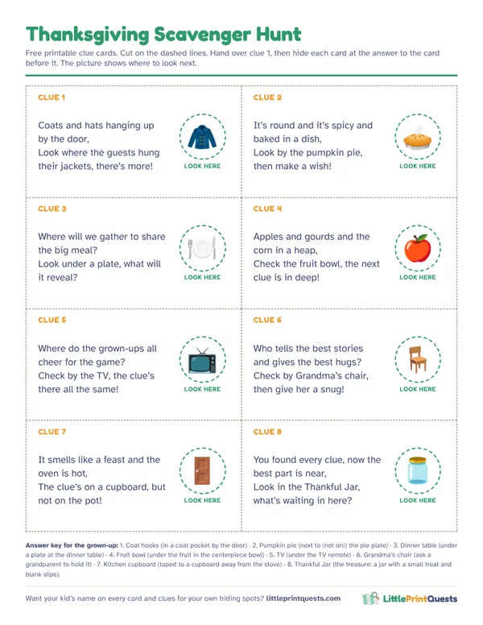

Thanksgiving scavenger hunt for kids
The turkey needs to rest for half an hour and the kids are bouncing off the walls. A Thanksgiving treasure hunt fills that gap, and the thankful twist below gives everyone something to share at the table.
Make a personalized hunt8 free rhyming clues
Hide each clue at the answer to the clue before it. The last one leads to a Thankful Jar.
Clue 1
Coats and hats hanging up by the door,
Answer: Coat hooks. Hide it: In a coat pocket by the door.
Look where the guests hung their jackets, there’s more!Clue 2
It’s round and it’s spicy and baked in a dish,
Answer: Pumpkin pie. Hide it: Next to (not on!) the pie plate.
Look by the pumpkin pie, then make a wish!Clue 3
Where will we gather to share the big meal?
Answer: Dinner table. Hide it: Under a plate at the dinner table.
Look under a plate, what will it reveal?Clue 4
Apples and gourds and the corn in a heap,
Answer: Fruit bowl. Hide it: Under the fruit in the centerpiece bowl.
Check the fruit bowl, the next clue is in deep!Clue 5
Where do the grown-ups all cheer for the game?
Answer: TV. Hide it: Under the TV remote.
Check by the TV, the clue’s there all the same!Clue 6
Who tells the best stories and gives the best hugs?
Answer: Grandma’s chair. Hide it: Ask a grandparent to hold it.
Check by Grandma’s chair, then give her a snug!Clue 7
It smells like a feast and the oven is hot,
Answer: Kitchen cupboard. Hide it: Taped to a cupboard away from the stove.
The clue’s on a cupboard, but not on the pot!Clue 8
You found every clue, now the best part is near,
Answer: Thankful Jar. Hide it: The treasure: a jar with a small treat and blank slips.
Look in the Thankful Jar, what’s waiting in here?
Free printable clue cards
All 8 clues on one sheet with picture hints for pre-readers, dashed cut lines and an answer key for the grown-up doing the hiding. Print it, cut it, hide it.

Download the free printable (PDF)
The thankful twist
At every stop, the finder says one thing they’re thankful for, and a grown-up writes it on a slip. The slips go in the Thankful Jar at the end, and at dinner each kid pulls one out and reads it to the table. Little ones can draw theirs.
A house full of cousins
- Pair big with little. An 8 year old reads, a 4 year old finds. Everyone gets a job.
- Keep clues away from the kitchen rush. Stick to rooms where the cooking isn’t happening, and never put a clue on the stove.
- Run it while the turkey rests. That half hour is the perfect length for an eight-clue hunt.
Keep the holiday going
A pretend Chef’s Kitchen or Grocery Store keeps little cooks busy while the real cooking happens, and the Christmas hunt is ready for next month.
Questions
How long should a Thanksgiving scavenger hunt take?
About 20 minutes with eight clues, which fits neatly into the time the turkey rests before carving.
What can I put at the end of a Thanksgiving hunt?
A Thankful Jar with a small treat for each kid and slips to write what they’re thankful for, to read at dinner.
More hunt ideas
- Birthday party hunt
- Ages 3 to 5
- Ages 6 to 8
- Classroom hunt
- Apartment Scavenger Hunt
- Indoor Scavenger Hunt for a House
- Backyard Scavenger Hunt
- Dinosaur hunt
- Superhero hunt
- Pirate hunt
- Outer Space hunt
- Princess & Knights hunt
- Unicorn hunt
- Mermaid hunt
- Construction hunt
- Pet Vet hunt
- Easter hunt
- Halloween hunt
- Christmas hunt
- Valentine’s hunt
- Firefighter hunt
- Ice Kingdom hunt
- Race Car hunt
- Pizza Shop hunt
- Burger Shop hunt
- Grocery Store hunt
- Post Office hunt
- Library hunt
- Police Station hunt
- Dentist hunt
- Pet Shop hunt
- Coffee Shop hunt
- Italian Restaurant hunt
- Auto Shop hunt
- Play Kitchen hunt
- Doctor hunt
- Puppet Theater hunt
- Secret Agent hunt
- Dress-Up hunt
- Ice Cream hunt
- Airport hunt